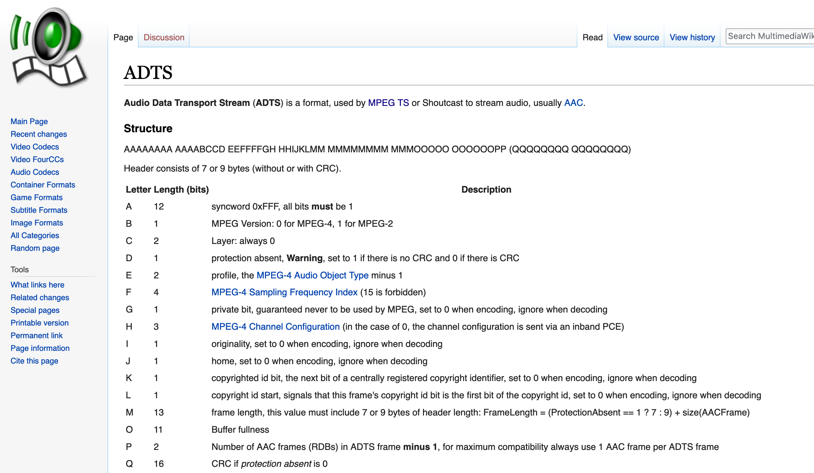
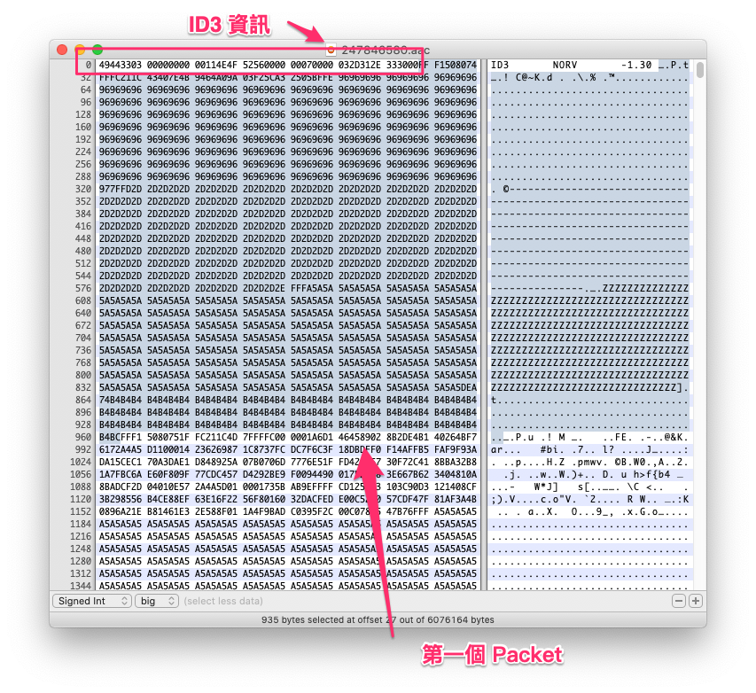
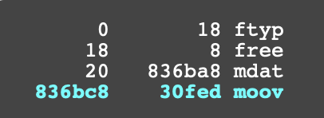
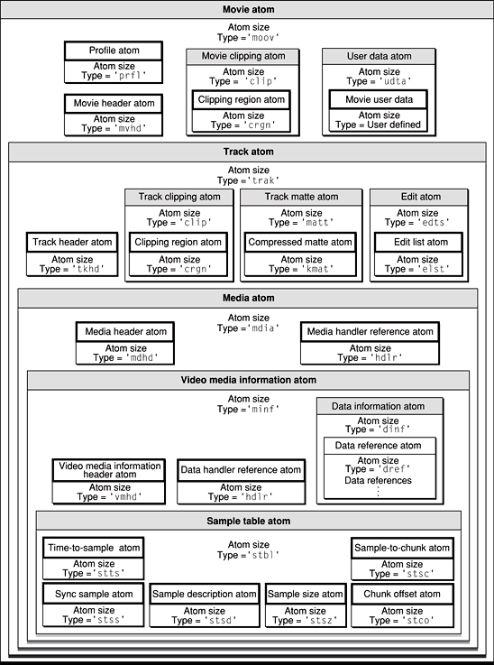
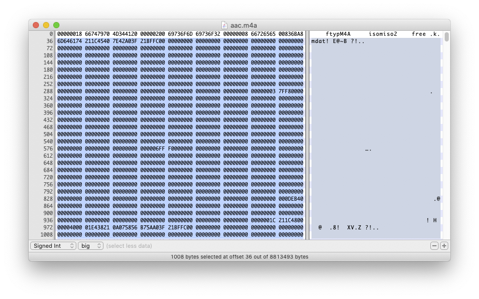
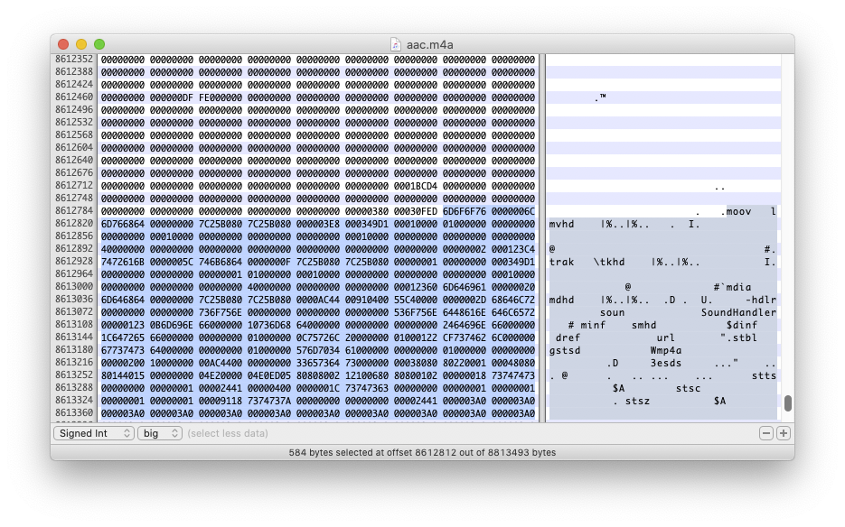
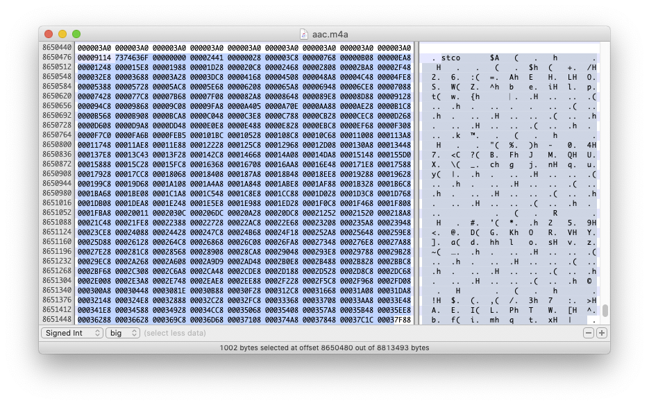

AAC 與 MP4 格式
AAC 全名 Advanced Audio Encoding，是一種在上個世紀九零年代底訂出的規格。AAC 是一種 codec，但是可以被包在不同種類的 container 中，所以，我們通常不會單獨稱呼有某種檔案是 AAC 檔案，而是將 AAC 與 container 格式合稱，像是 AAC-MP4、AAC-ADTS…等。
AAC-ADTS
AAC-ADTS 格式與 MP3 格式接近，一樣是一段 header 之後接著一個 packet，所以，我們也可以看到使用 AAC 格式的網路廣播電台。每個 packet 使用 AAC codec 壓縮，每個 packet 中包含 1024 個 frame，因此我們可以知道，使用 AAC-ADTS 產生出來的音檔的長度，與 MP3 是不同的。
AAC-ADTS 也有自己的 header 格式，長度在 7 到 9 個 bytes 之間。一般來說，附檔名是 .aac 的檔案，便是 AAC-ADTS 檔案。

打開 ADTS 的規格，我們又看到「AAAAAAAA AAAABCCD EEFFFFGH HHIJKLMM MMMMMMMM MMMOOOOO OOOOOOPP (QQQQQQQQ QQQQQQQQ)」這種文字，我們既然處理過 MP3，我們也知道怎麼處理這種 header。
前 12 個 bit 是 syncword，所以，只要連續讀到 12 個 1，就可以判斷是 header 的開始。從第 30 個 bit 開始，也就是 M 這段，裡頭是整個 packet 的長度—請注意，這個長度也包含 header 的部份—只要繼續往下讀，就可以讀出 packet。
AAC-ADTS 格式也可能包含 ID3 檔頭。在 iOS/macOS 平台上，需要注意：Core Audio API 所提供的 parser 無法正確解析檔案前方有髒掉的資料的 AAC-ADTS 資料，我們需要自己寫一個 parser，手動把 Core Audio 無法解析的部份濾掉—也就是說，我們要自己想辦法找到第一個 syncword。
我們也可以打開 Hex Editor 看看。一個包含 ID3 資訊的 AAC-ADTS 檔案，可能會是像這樣：

AAC-MP4
AAC-MP4 格式的檔案，通常附檔名是 .mp4 或 .m4a。而當我們在討論 HLS 以及 MPEG Dash 時，也需要知道：這些格式也建立在 MP4 格式上，像 HLS 裡頭的每個 TS 往往就是 MP4 檔案，而 MPEG Dash 更是相當倚賴一種叫做 fMP4 的格式。
MP4 格式淵源自蘋果的 QuickTime 格式，所以 MP4 可說與 QuickTime 互通。跟我們在前面講過的格式比較，MP4 container 有很多不同：
- MP4 不只是一種音樂格式，也是一種影片格式—某方面來說，我們可以把 MP4 container，想像成是一種把所有畫面都拿掉的影片
- MP4 是一種樹狀/巢狀的結構
- MP4 格式本身就有 metadata 的區段
- MP4 包含分開來的時間/資料如何對應的區段
我們來看一下每個 MP4 檔案的結構。
Atoms
MP4 是以 atom 所構成。每個 atom，都可以想成是一個樹狀結構的節點，在樹狀結構的根部有一些基本 atom，在這些基本 atom 底下，每個子 atom（即 sub atom）是被一個上層節點所包圍。每個 atom 都有一段 header，header 當中包含這個 atom 的各種資訊，包括這個 atom 的 header 與 body 的長度、種類、ID、有多少子 atom…等（參見蘋果文件QT Atoms and Atom Containers，這份文件也說明了 atom 的規格，在這邊不贅述），播放器在知道某個 atom 的意義之後，就可以繼續從這個 atom 的 Body 區段，繼續尋找這個 atom 的子 atom。
在 MP4 規格中，最上層的 atom 包括是 ftyp、moov、mdat 等最重要的區段，我們可以想像成在連續的 Binary Data 中，先被分成了這幾段，然後在下方還有其他 atom。假如我們拿 MP4 Parse 工具裡頭解析一個 MP4 檔案，就應該可以看到這些 atom：

ftyp：用來標示這個 MP4 檔案的類型，像是這個檔案是部影片，或是只有音樂的音檔等moov：這個檔案相關的 metadata，像是歌手、專輯、歌曲名稱，或是封面圖等等。 MP4 可以標示的 metadata 相對來說比較複雜，比方說，一部影片可能有多個章節，那麼，moov中就會包含各個章節的相關資料mdat：音檔資料實際被存放的位置- 其他：在 MP4 的規格中，也定義了像是
free、skip、wide這些類型的 atom，代表的是可以跳過的空資料
MP4 格式如何達成快速 Random Seek
前面提到，在處理 MP3 或是 AAC-ADTS 格式的時候，必須要把整個檔案從頭到尾讀一遍，才知道有多少 packet，以及 packet 的所在位置，不利於快速計算歌曲的總長度，以及快速 seek 到某個位置播放。我們可以看一下 moov 以下有哪些 atom，方便解決 MP3 格式以及 ADTS 格式的問題：

以上圖片來自蘋果開發者網站 QuickTime File Format Specification: Movie Atoms。
我們可以注意到，在 moov 底下，包含像是 stsz、stco 等 atom，stsz 這個 atom 中包含的就是 packet 的數量，stco 則是每個 packet 在 mdat atom 中的 offset 位置。
在平台上所提供的全功能播放元件，像是 iOS/macOS 的 AVPlayer，在播放一個位在線上的 MP4 檔案的時候，會發出多條連線，嘗試在檔案的最前方或是最後方找到 moov 區段，然後從 moov 區段中找到 stsz、stco 等區段，有了 stsz，就可以畫出進度條，提供用戶做 random seek 的 UI，當用戶 seek 到某個地方的時候，就根據 stco，發送帶有 Range Header 的 HTTP 連線，從哪個地方抓取，如果沒有 stsz 以及 stco，才去把 mdat 讀過一遍，找出 packet 位置。如果是一份被燒錄在 DVD 或是藍光碟片的大檔，也一樣會嘗試先從檔案的最前方或是最後方，找到 moov 區段。
由於播放軟體在載入 MP4 檔案的時候，不是直接載入可以播放的資料，而是先去尋找 moov 區段，所以，在播放 MP4 的時候，其實可以感受到，會有一段前置處理的時間。像 Chromecast 上的 audio player，採取的就是這樣的播放行為，每次對 Chromecast 呼叫 random seek，往往就會觸發一個帶 Range header 的連線，而如果已經過了一分鐘才做 random seek，就會因為音檔已經不存在而無法播放，所以，我們在產品上，就做過在 Chromecast 上無法 random seek 的奇妙設計。
另外要注意：如果我們使用 iOS/macOS 上的 CoreAudio API 的 Audio Parser，像是 AudioFileStreamID，就只能夠解析 moov 放在 mdat 前方的 MP4 檔案，不然就會跳出 kAudioFileStreamError_NotOptimized 錯誤，代碼的意思是「這個檔案沒有做過最佳化」，意思其實不清不楚，我們也是花了點時間才了解蘋果的意思。很多時候，我們在 iOS/macOS 上，可以用 QuickTime 或是 AVPlayer 播放的檔案，用 CoreAudio API 卻不見得有辦法播出，也就是說，蘋果在自己產品上使用的 Parser，跟開放給外部開發者使用的 API，其實是不同的。
AAC-MP4 檔案
我們也可以拿 Hex Editor，打開一個 AAC-MP4 檔案看看。可以看到在最前方是 ftyp 欄位，標示這個檔案是 M4A，然後從第 36 個 byte 開始，就是 mdat 區段。

這個檔案的 moov 區段位在後方：

在 moov 當中包含 stco 這段用來方便做 random seek 的 atom：

另外，如果想要解析 MP4 檔案當中的 Atom，在網路上已經有不少現成的工具，光是用 Google 搜尋「MP4 Atom Parser」，就可以找到不少。我們簡單列出幾個：
- mp4parser.com
- onlinemp4parser.com
- mp4explorer，用 C# 寫成的 Windows 程式